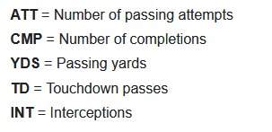
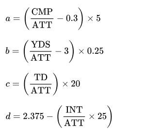
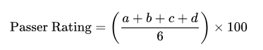

If you have an addiction, seek help.
Gambling Addiction Hotline: 1-800-GAMBLER
Introduction:
Before we dive in, let’s clear something up right away.
I do not condone supporting, cheering for, or celebrating the Dallas Cowboys in any way, shape, or form.
With that out of the way, Dak Prescott happens to be the longest-tenured active quarterback for a single team in the NFL (thanks, Google). For our purposes, that means more data—and more data means more accurate predictions.
So, what’s this project all about? It’s about using machine learning and data science to predict a player's stat outcome for a game. In essence, sports betting is just applied data science made to look like random chance to those eager to throw down some money, there us a reason why the sports betting industry had revenue of $10.9 billion in 2023. Our goal here is to see if we can use the same tools—data science and machine learning—to challenge the odds set by Vegas.
How are we going to do this? By building a simple, supervised linear regression model to predict Dak Prescott’s passing yards in an upcoming game against the San Francisco 49ers (Week 8, 2024 || 27 Oct 2024).
Projects GitHub Repository: Link
The Data:
I was able to get all the data I needed from pro-football-reference.com.
- Dak's Regular Season Career Stats: Link || Download (CSV)
- Dak's Stats VS 49ers: Link
- SF's Defensive Stats 2024: Link
Big thanks to them!
Since our player in this project is a quarterback, I think it's fitting to try to predict Dak's passing yards for this upcoming game.
If you open the CSV for Dak's regular season stats, you'll notice I removed the rushing and receiving stats. Why? 1. They're irrelevant for this project, and 2. There were some junk columns that were causing issues with Pandas.
import pandas as pd
df = pd.read_csv('DakPrescott.csv') # Loading our data into pandas
df = df.dropna() # Dropping samples from our data that are blank
print(df.head()) # Displaying our clean data
Output:
Rk Year Date G# Week Age Team Opp Result Cmp Att \
0 1.00 2,016.00 9/11/2016 1.00 1.00 23.04 DAL NYG L 19-20 25.00 45.00
1 2.00 2,016.00 9/18/2016 2.00 2.00 23.05 DAL WAS W 27-23 22.00 30.00
2 3.00 2,016.00 9/25/2016 3.00 3.00 23.06 DAL CHI W 31-17 19.00 24.00
3 4.00 2,016.00 10/2/2016 4.00 4.00 23.07 DAL SFO W 24-17 23.00 32.00
4 5.00 2,016.00 10/9/2016 5.00 5.00 23.07 DAL CIN W 28-14 18.00 24.00
Cmp% Pass_Yds Pass_TD Int Passer_rating Sk Yds Y/A AY/A
0 55.56 227.00 0.00 0.00 69.40 0.00 0.00 5.04 5.04
1 73.33 292.00 0.00 0.00 103.70 4.00 14.00 9.73 9.73
2 79.17 248.00 1.00 0.00 123.60 0.00 0.00 10.33 11.17
3 71.88 245.00 2.00 0.00 114.70 2.00 11.00 7.66 8.91
4 75.00 227.00 1.00 0.00 117.90 1.00 5.00 9.46 10.29
In the output, we see the first five rows of our data, which include labels for our columns. However, columns like Date, Result, and Week are examples of categorical data. For this project, we’re focusing on the numerical data.
nummerical_cols = ['Age', 'Cmp', 'Att', 'Cmp%', 'Pass_Yds', 'Pass_TD', 'Int', 'Passer_rating', 'Sk', 'Y/A']
features = df[nummerical_cols]
We’ve now isolated the numerical columns in the dataset, assigning them to the variable features. These will be the features we use for our model. We can now check out some basic statistics from this data.
pd.set_option('display.float_format', '{:,.2f}'.format) # Display numbers with up to two decimal places
print(features.describe(percentiles=[0.25, 0.5, 0.75])) # Display stats based on our numerical data
Output:
Age Cmp Att Cmp% Pass_Yds Pass_TD Int Passer_rating \
count 120.00 120.00 120.00 120.00 120.00 120.00 120.00 120.00
mean 26.72 22.81 34.14 67.15 258.84 1.75 0.67 98.55
std 2.55 6.24 8.85 9.53 84.82 1.27 0.83 26.72
min 23.04 4.00 8.00 37.84 37.00 0.00 0.00 30.40
25% 24.15 19.00 27.00 61.54 207.75 1.00 0.00 80.77
50% 26.13 22.00 33.00 66.67 249.50 2.00 0.00 101.05
75% 29.12 27.00 39.00 72.64 295.25 3.00 1.00 116.67
max 31.08 42.00 58.00 88.89 502.00 5.00 3.00 158.30
Sk Y/A
count 120.00 120.00
mean 2.09 7.64
std 1.66 1.81
min 0.00 3.46
25% 1.00 6.40
50% 2.00 7.69
75% 3.00 9.00
max 8.00 12.66
In the notebook, I visualize this data using histograms and scatter plots. To reduce clutter, I won’t include them here, but I encourage you to download the PDF of my notebook if you're interested in seeing them.
However, I will show the correlation matrix here as it is directly relevant to what we're doing in this project:

Notice how passer rating has a strong correlation with Y/A (Yards per Attempt). This makes perfect sense if you know the Passer Rating formula:



Pretty neat, right?
We should also look at the correlation between passing yards and variables like completions (Cmp), attempts (Att), touchdowns (Pass_TD), passer rating, and yards per attempt (Y/A). These features will heavily influence the predictions of the model. While multicollinearity could be an issue, we are trying to keep this project as simple as possible.
The Model:
Now, we need to separate our target variable (Passing Yards) from the rest of the features.
features = features.drop(columns='Pass_Yds') # Removing Pass_Yds column
target = df['Pass_Yds'] # Assigning target to the column of Pass_Yds
Now, we have our target and features. Let’s split the data into training and testing sets.
from sklearn.model_selection import train_test_split
X_train, X_test, y_train, y_test = train_test_split(features, target, test_size=0.2) # Split the data 80/20 into training and testing sets
print(X_train.shape, y_train.shape, X_test.shape, y_test.shape) # Display the shape of our sets.
Output:
(96, 9) (96,) (24, 9) (24,)
Now we can make our model, fit the data, and train the model. Then, we'll back-test it.
from sklearn.linear_model import LinearRegression
linear_reg = LinearRegression() # Create the linear regression model
linear_reg.fit(X_train, y_train) # Fit the model with our training data
linear_pred = linear_reg.predict(X_test) # Generate predictions
It's that easy. Now, let’s see how our model performed.
dif = [ ]
table_data = [ ]
for i in range(len(linear_pred)):
predicted = linear_pred[i]
actual = y_test.values[i]
difference = actual - predicted
dif.append(difference)
# Append each row as a dictionary
table_data.append({"Predicted": predicted, "Actual": actual, "Difference": difference})
# Convert the list of dictionaries into a pandas DataFrame
test_data = pd.DataFrame(table_data)
test_stats = test_data.describe(percentiles=[0.25, .5, .75]) # Calculate stats for the test
# Display the data
print(test_data)
print(test_stats)
Output:
Predicted Actual Difference
0 169.04 168.00 -1.04
1 494.55 502.00 7.45
2 276.83 273.00 -3.83
3 222.53 223.00 0.47
4 280.76 284.00 3.24
5 247.56 249.00 1.44
6 330.06 334.00 3.94
7 232.07 232.00 -0.07
8 280.93 272.00 -8.93
9 305.27 299.00 -6.27
10 171.60 179.00 7.40
11 260.90 255.00 -5.90
12 223.62 212.00 -11.62
13 345.42 352.00 6.58
14 76.77 102.00 25.23
15 258.54 248.00 -10.54
16 372.32 374.00 1.68
17 239.04 245.00 5.96
18 249.23 249.00 -0.23
19 232.76 227.00 -5.76
20 151.11 170.00 18.89
21 325.50 319.00 -6.50
22 225.55 212.00 -13.55
23 253.64 247.00 -6.64
Predicted Actual Difference
count 24.00 24.00 24.00
mean 259.40 259.46 0.06
std 82.10 80.25 9.17
min 76.77 102.00 -13.55
25% 225.06 220.25 -6.33
50% 251.43 248.50 -0.15
75% 287.01 287.75 4.45
max 494.55 502.00 25.23
We can see the average difference between the predicted and actual values is only 0.06 yards—not too shabby.
Results:
Now, we just need to feed the model values for the features. But, where are we going to get those values? We’ll make them up—kind of. Since we trained the model on historical data, we can generate values based on historical data.
I will be using stats from Dak’s past games vs San Francisco and normalizing them against the performance of the 49ers' defense so far this year. We are currently going into week 7 of the NFL, so we will be using data up to week 6 as they haven't played their week 7 game yet.
Once again, data is coming from pro-football-reference.com:
# Dak's Stats vs SF
num_games = 3
dak_cmp_SF = 53/num_games
dak_att_SF = 81/num_games
dak_cmpPer_SF = 65.43
dak_td_SF = 6/num_games
dak_int_SF = 3/num_games
dak_pRate_SF = 98.4
dak_sk_SF = 5/num_games
dak_ydsAtt_SF = 7.8
# 49ers' Defensive Stats 2024 (So far)
games = 6
SF_passAlw = (198+257+198+143+189+309)/games
SF_int = 6/games
SF_sks = 16/games
SF_pasTDAlw = 8/games
SF_passCmp = 120/games
SF_passAtt = 195/games
SF_cmpPer = (SF_passCmp/SF_passAtt)*100
SF_yardsAtt = (SF_passAlw/SF_passAtt)
# Normalizing stats
norm_cmp = (dak_cmp_SF/SF_passCmp) * dak_cmp_SF
norm_att = (dak_att_SF/SF_passAtt) * dak_att_SF
norm_cmpPer = (dak_cmpPer_SF/SF_cmpPer) * dak_cmpPer_SF
norm_TD = (dak_td_SF/SF_pasTDAlw) * dak_td_SF
norm_int = (dak_int_SF/SF_int) * dak_int_SF
norm_sacks = (dak_sk_SF/SF_sks) * dak_sk_SF
norm_yardsAtt = (dak_ydsAtt_SF/SF_yardsAtt) * dak_ydsAtt_SF
Now that’s out of the way, we can see what values will be going into the model to predict Dak’s upcoming passing yards.
# On October 27, 2024, Dak will be 31.25 years old
stats_vs_SF = [31.25, norm_cmp, norm_att, norm_cmpPer, norm_TD, norm_int, dak_pRate_SF, norm_sacks, norm_yardsAtt]
nummerical_cols.remove('Pass_Yds')
test = pd.DataFrame([stats_vs_SF], columns=nummerical_cols)
print(test)
Output:
Age Cmp Att Cmp% TD Int Rating Sk Y/A
0 31.25 15.61 22.43 69.57 3.00 1.00 98.40 1.04 9.17
We are finally ready to get our prediction.
predict = linear_reg.predict(test) # Plug our normalized values in to get a prediction
pass_yards = predict[0] # Extract the passing yards from the prediction array
print(f'This Model predicts Dak Prescott will pass for {pass_yards:.2f} yards vs SF on 10/27/2024') # Results
Output:
This Model predicts Dak Prescott will pass for 240.48 yards vs SF on 10/27/2024
There it is: our prediction using a machine learning linear regression model—240 passing yards. There’s one more thing we can do: normalize this value against the 49ers' defense's passing yards allowed, and then we can compare.
dak_yds_SF = 632/num_games
norm_passYards = (dak_yds_SF/SF_passAlw) * pass_yards
print(f'Dak AVG Passing Yards vs SF: {dak_yds_SF:.2f}\nSF AVG Passing Yards Allowed in 2024: {SF_passAlw:.2f}\nPredicted Passing Yards by Dak: {pass_yards:.2f}\nNormalized Predicted Pass Yards: {norm_passYards:.2f}')
Output:
Dak AVG Passing Yards vs SF: 210.67
SF AVG Passing Yards Allowed in 2024: 215.67
Predicted Passing Yards by Dak: 240.48
Normalized Predicted Pass Yards: 234.91
Outcome:
At the time of writing this (16 OCT 2024), player prop bets are not posted yet for week 8 games. So, you and I will have to come back and see what Vegas thinks about how Dak will perform.
Conclusion:
This was just a quick project I threw together based on things I've learned from reading and my Data Science and Analytics class. There are plenty of things to expand upon and build, including different types of models to run. Maybe there will be a part 2!